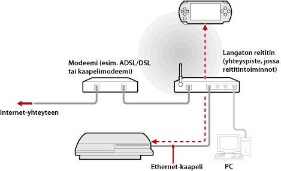
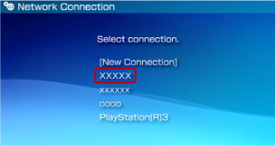

Verkko > Etäkäyttö (tukiaseman kautta)
Etäkäyttö (tukiaseman kautta)
Liitä PS3™-järjestelmä tukiasemaan Ethernet-kaapelilla ja muodosta yhteys PS3™-järjestelmään tukiaseman kautta PSP™-järjestelmän WLAN-toiminnon avulla.
Kokoonpanoesimerkki

Vihjeitä
- Langaton reititin on eräänlainen tukiasema. Tukiasema taas on laite, jonka avulla voi muodostaa langattoman yhteyden verkkoon. Reititin on laite, jonka avulla monta eri laitetta voi käyttää samaa Internet-yhteyttä.
- Modeemissa saattaa olla reititintoiminto. Kytke PS3™-järjestelmä laitteeseen, jossa on reititintoiminto.
- Jos sekä tukiasemassa että modeemissa on reititintoiminto, ota jommankumman reititintoiminto pois käytöstä. PS3™- ja PSP™-järjestelmä täytyy liittää samaan verkkoon. Jos käytössä on monta reititintä, PS3™- ja PSP™-järjestelmä saatetaan liittää eri verkkoihin, jolloin etäkäyttö ei ole mahdollista.
Esivalmistelut (PS3™- ja PSP™-järjestelmä)
PSP™-järjestelmä täytyy rekisteröidä PS3™-järjestelmään (eli niiden välille täytyy muodostaa yhteys) ennen ensimmäistä etäkäyttöä. Rekisteröi järjestelmä valitsemalla  (Asetukset) >
(Asetukset) >  (Etäkäyttöasetukset) > [Rekisteröi laite].
(Etäkäyttöasetukset) > [Rekisteröi laite].
Esivalmistelut (PSP™-järjestelmä)
Muodosta verkkoyhteys, jotta voit liittää PSP™-järjestelmän tukiasemaan. Jos PSP™-järjestelmään on jo tallennettu verkkoyhteys, jota käytetään verkkoyhteyden muodostamisessa tukiaseman kautta, uutta verkkoyhteyttä ei tarvitse luoda. Lisätietoja verkkoyhteyden muodostamisesta on PSP™-järjestelmän käyttöoppaassa.
Etäkäyttö
1. |
Valitse PS3™-järjestelmässä |
|---|---|
2. |
Valitse PSP™-järjestelmässä |
3. |
Valitse [Connect via Private Network]. |
4. |
Valitse yhteysluettelosta sen tukiaseman yhteys, jota käytetään etäkäytössä.  Jos yhteyden muodostaminen onnistuu, PS3™-järjestelmän näkymä näkyy PSP™-järjestelmässä. |
 (Verkko) >
(Verkko) >  (Etäkäyttö).
(Etäkäyttö). (Etäkäyttö).
(Etäkäyttö).Vihjeitä
- Etäkäyttö on mahdollista tukiaseman signaalin kantavuusalueella.
- Jos otat PS3™-järjestelmän etäkäynnistyksen käyttöön, voit määrittää laitteen virran kytkettäväksi päälle automaattisesti (Wake on LAN). Tällöin edellistä vaihetta 1 ei tarvitse suorittaa. Lisätietoja on tämän oppaan kohdassa (Asetukset) > (Etäkäyttöasetukset) > [Etäkäynnistys].
Etäkäytön lopettaminen
Paina PSP™-järjestelmän PS-näppäintä (HOME-näppäintä) ja valitse sitten [Quit Remote Play] > [Quit and Turn Off the PS3™ System].
Vihje
Valitse [Quit Without Turning Off the PS3™ System], jos käytät PS3™-järjestelmää tiedostojen kopioimiseen, taustalataamiseen tai muihin toimiin, jotka edellyttävät, että järjestelmän virta on kytkettynä.